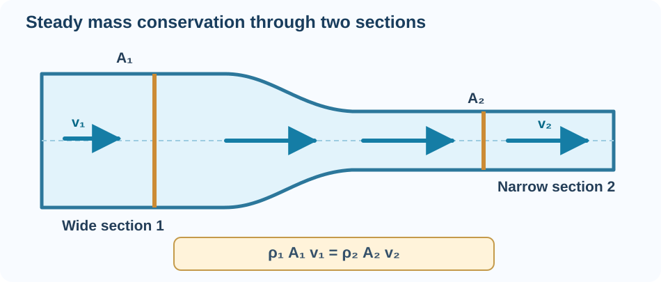
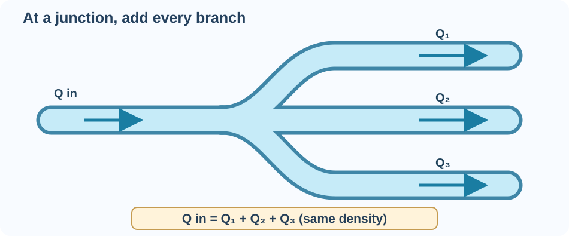

Derive the continuity equation from conservation of mass, solve two-section and branching problems, and learn exactly when narrowing a flow passage changes speed.
V95-B4 public study preview — not a completed or officially approved Unit 6 course. The lesson draws on the teacher's private Topic 6.4 master (compiled pp.151–182), V94-C2.4 academic audit and supplied official FBISE framework. Illustrations and explanations are newly authored. The original printed NBF pp.96–99, Figures 6.7/6.8 and verbatim Example 6.3/Assignment 6.3 have not been exhaustively source-matched. Per-question SLO and cognitive certification still await teacher review.
P-11-B-36Use the equation of continuity to solve problemsSummative · Application
P-11-B-37Explain the increased velocity of water when the end of a rubber pipe is squeezedSummative · Understanding
P-11-B-38Justify that continuity expresses conservation of massSummative · Application
These are verified SLO-level classifications from the supplied FBISE framework PDF p.11; generated exercises are provisional until individual teacher review. Formative B39 and Bernoulli pressure effects belong to Topic 6.5, not this continuity derivation.
01 · MEANING AND UNITS
How much fluid passes a section?
At each selected pipe cross-section, let A be the area perpendicular to the local flow and v the mean speed normal to that section. Let fluid density be ρ. During a short interval Δt, the fluid moves a mean distance Δx = vΔt; the transferred volume is ΔV = AΔx = AvΔt.
Q = ΔV/Δt = AvVolume flow rate Q: m³/s (or L/s). Mean speed v: m/s. Cross-section area A: m².
ṁ = Δm/Δt = ρAv = ρQMass flow rate ṁ: kg/s. Density ρ: kg/m³. Mass flow rate and volume flow rate are different physical quantities.
Essential conversions: 1 cm = 10⁻² m; 1 cm² = 10⁻⁴ m²; 1 L = 10⁻³ m³; 1 m³/s = 1000 L/s. For a circular internal pipe section, A = πr² = πd²/4. Doubling radius increases area by four, not two.
Units check: [Av] = m² × m/s = m³/s; [ρAv] = kg/m³ × m³/s = kg/s. Never compare or add speeds (m/s) as if they were volumetric flow rates (m³/s).
02 · TWELVE-STEP CONSERVATION DERIVATION
Why ρ₁A₁v₁ = ρ₂A₂v₂
Consider steady flow through one pipe, with no side sources, sinks, leaks or change of stored mass between inlet (1) and outlet (2). Areas A₁ and A₂ are perpendicular to the local flow, and v₁ and v₂ denote average normal speeds. Use the same positive time interval Δt at both sections.

Independently authored two-section teaching diagram, not a reproduction of original NBF Figure 6.7. The arrows represent mean flow direction; pressure is not determined by this picture alone.
Choose one interval: compare fluid passing both cross-sections during the identical Δt.
Start with mean speed at section 1: v₁ = Δx₁/Δt.
Rearrange distance: Δx₁ = v₁Δt.
Form a short fluid cylinder: ΔV₁ = A₁Δx₁.
Substitute: ΔV₁ = A₁v₁Δt.
Find incoming mass: Δm₁ = ρ₁ΔV₁ = ρ₁A₁v₁Δt.
Repeat at section 2: Δx₂ = v₂Δt and ΔV₂ = A₂v₂Δt.
Find outgoing mass: Δm₂ = ρ₂A₂v₂Δt.
Apply conservation: with no accumulation or leakage in the steady control volume, Δm₁ = Δm₂.
Substitute both masses: ρ₁A₁v₁Δt = ρ₂A₂v₂Δt.
Divide by common nonzero Δt: cancel it on both sides.
Identify steady mass throughput: ρ₁A₁v₁ = ρ₂A₂v₂ = ṁ, in kg/s.
ρ₁A₁v₁ = ρ₂A₂v₂General steady mass continuity · no storage, leak, side inflow/outflow or mass creation in the compared region
What is conserved? The mass entering per second equals the mass leaving per second. If density changes, the volume rates need not be equal; mass throughput still matches in this model.
03 · IMPORTANT SPECIAL CASE
When can density cancel?
For steady incompressible flow through an unbranched passage, suppose ρ₁ = ρ₂ = ρ and ρ is nonzero. Substituting into the general relation gives ρA₁v₁ = ρA₂v₂. Divide by ρ:
A₁v₁ = A₂v₂ = QIdentical volume flow rate Q across the compared sections at that steady instant, assuming no leaks or side outlets
The outlet speed follows by dividing by A₂: v₂ = (A₁/A₂)v₁. If the radius changes in a circular tube, areas scale with the square of radius:
v₂ = (r₁/r₂)²v₁ = (d₁/d₂)²v₁If radius halves with unchanged Q, mean speed becomes four times larger. If density changes, instead use the full ρAv relation.
Pressure warning: Continuity contains no pressure term. A speed change by itself does not allow you to calculate pressure or prove it increased. Pressure/energy arguments require additional equations and physical conditions in Topic 6.5.
04 · MULTIPLE OUTLETS
A branching pipe must conserve the total flow

Independently authored branch diagram. It shows total conservation only, not a measurement or copy of printed NBF Figure 6.7/6.8.
Σṁin = ΣṁoutGeneral steady mass balance with no accumulation or external sources/sinks
Qin = Q₁ + Q₂ + ⋯ + QnFor the same incompressible fluid, Q = Av. The inlet rate is not generally equal to each branch's rate.
If n outlet tubes have equal area Ab and equal mean speed vb, and the inlet has Ain, vin, then Ainvin = nAbvb.
vb = (rin/rb)² × (vin/n)Only for equal-size, equal-flow branches of a steady incompressible stream
This is the structure behind the prepared NBF-labelled Example 6.3 on the aorta and 30 smaller arteries. It is a simplified average-flow model, not a full prediction of circulation physiology.
05 · INTERPRET PHYSICAL APPLICATIONS
Squeezed hose, falling jet and river channel
Squeezed rubber pipe
At one steady instant: for constant Q in an unbranched hose, reducing the outlet area makes its mean speed larger. Before vs after squeezing: real supply resistance may change Q itself, so the same numerical factor is not guaranteed.
Freely falling water jet
As water accelerates downward under gravity, a steady incompressible jet can become narrower because Av must stay constant. Gravity explains acceleration; continuity explains the changing cross-section, not the cause of acceleration.
Deep or shallow channel
For a rectangular river with approximately the same width and unchanged discharge, a deeper section has greater flow area and lower mean speed. River slope, bed friction, width, side streams and discharge can invalidate a universal “deeper = slower” rule.
Keep the comparisons separate: Continuity relates sections of one steady flow, whereas changing the hose opening may alter the whole system's discharge between two different experiments. Neither statement alone establishes a pressure change.
06 · STEP-BY-STEP NUMERICALS
Eight worked applications, including the prepared 30-artery example
The prepared master's data for its NBF-labelled Example 6.3 are used in a newly worded explanation below. Exact original printed NBF pp.98–99 wording and figure remain unverified. The other cases use author-developed supplementary Part C example values, not additional original numbered NBF tasks.
Prepared master · NBF-labelled Example 6.3 data · original wording unverified
One aorta divides into 30 equal-size arteries
The aorta has radius 0.8 cm and mean blood speed 0.33 m/s. Flow divides equally between 30 arteries, each of radius 0.4 cm. Assuming approximately incompressible steady flow, find the mean speed in each small artery.
Use total-outlet volume conservation: πrin²vin = 30πrb²vb.
Cancel π and rearrange: vb = (rin/rb)²(vin/30).
The squared radius ratio is (0.8/0.4)² = 4.
vb = 4 × 0.33/30 = 0.044 m/s.
Combined artery area is 7.5 times the aorta area, hence each branch's mean speed is 7.5 times smaller than the original mean speed.
This calculation assumes the 30 branches are identical and share the discharge equally; the speed in one artery is not found by setting its own Q equal to the aorta's entire Q.
Supplementary application 1 · constricted pipe
Areas 0.012 m² and 0.004 m²
For one steady incompressible flow, A₁ = 0.012 m², v₁ = 1.5 m/s and A₂ = 0.004 m².
Apply A₁v₁ = A₂v₂.
v₂ = (0.012/0.004) × 1.5 = 4.5 m/s.
Q = 0.012 × 1.5 = 0.018 m³/s through both sections.
Supplementary application 2 · radius ratio
Halving internal radius
Radius decreases from 6 cm to 3 cm and inlet mean speed is 1.2 m/s.
Area ratio = (6/3)² = 4.
v₂ = 4 × 1.2 = 4.8 m/s, only if the same incompressible Q passes both sections.
Supplementary application 3 · collecting water
12 L collected in 40 s from a 1 cm-radius nozzle
Convert 12 L = 0.012 m³.
Q = 0.012/40 = 3.0 × 10⁻⁴ m³/s.
Outlet radius = 0.010 m; A = π(0.010)² ≈ 3.1416 × 10⁻⁴ m².
Mean speed = Q/A ≈ 0.955 m/s.
Supplementary application 4 · three equal branches
1.2 cm inlet and three 0.6 cm outlets
Inlet mean speed is 1.0 m/s and flow splits evenly into three equal-radius outlets.
Use vb = (1.2/0.6)²(1.0/3).
vb = 4/3 ≈ 1.33 m/s in each branch.
Supplementary application 5 · unequal outlets
Find the remaining branch rate and speed
One inlet carries 0.040 m³/s. Branch 1 carries 0.015 m³/s; branch 2 has area 0.005 m².
Q₂ = 0.040 − 0.015 = 0.025 m³/s.
v₂ = Q₂/A₂ = 0.025/0.005 = 5.0 m/s.
Supplementary application 6 · variable-density gas
Mass flow is conserved even when volume rate changes
A model river is 20 m wide at both sections. Deep-section depth is 2.5 m and mean speed 0.80 m/s; shallow-section depth is 1.0 m. Assume steady unchanged discharge with no tributaries.
Deep area = 20 × 2.5 = 50 m².
Shallow area = 20 × 1.0 = 20 m².
Shallow-section mean speed = (50/20) × 0.80 = 2.0 m/s.
This numerical is an idealized illustration of the prepared NBF-labelled Assignment 6.3 principle, not a universal measured property of real rivers or a verbatim original textbook question.
07 · LIVE MODEL CHECKERS
Explore conservation for two sections and equal branches
Enter fluid density, pipe cross-section and speed to calculate the downstream speed required by steady mass continuity. These inputs describe an idealized comparison, not an uncontrolled real pipe or a pressure/drag experiment.
Check the thirty-artery example with equal branches
Change the inlet radius, downstream branch radius, branch count and inlet speed. All branches are assumed to have the same mean area and to share flow equally.
Both interactive tools run locally without sending values, saving grades or accessing accounts. They are mathematical demonstrations only; the equations cannot alone calculate pressure, predict real hose discharge after adjustment or certify safe vessel/medical operation.
08 · REVISION SELF-CHECK
Six conceptual checks with revealable explanations
1. Which physical quantity is fundamentally conserved in ρ₁A₁v₁ = ρ₂A₂v₂?
Mass throughput, in kg/s, for a steady control volume without leaks, storage or side sources. When density remains the same, this reduces to constant volumetric throughput.
2. Can we always cancel density to write A₁v₁ = A₂v₂?
No. Cancellation requires ρ₁ = ρ₂ and the same steady no-loss stream. If density changes, retain the full ρAv relation.
3. What happens to speed if circular pipe radius halves and Q remains constant?
Area becomes one quarter because A = πr², so the required mean speed becomes four times larger.
4. Does squeezing a real hose automatically keep its before-and-after Q unchanged?
No. At any one steady instant, the same Q crosses unbranched sections if the liquid is incompressible. Changing the outlet can change the complete supply system's discharge between different instants.
5. Why must a junction equation include all outgoing branches?
All outlets share the inlet flow. For incompressible steady flow, Q in equals the sum of all outlet Q values. The aorta example requires division across 30 equal arteries, not assignment of the whole inlet flow to each artery.
6. Can the continuity equation alone tell us the pressure inside a nozzle?
No. It connects density, area and mean flow speed to mass conservation. Pressure and energy effects require additional physical information and are addressed in Topic 6.5.
Fast revision formulas
Mass continuity: ρ₁A₁v₁ = ρ₂A₂v₂
Incompressible: A₁v₁ = A₂v₂ = Q
Volume rate: Q = Av · m³/s
Mass rate: ṁ = ρAv · kg/s
Circular area: A = πr² = πd²/4
Branching: Σṁ in = Σṁ out
Equal branches: vb = (rin/rb)²(vin/n)
Conversions: 1 cm² = 10⁻⁴ m²; 1 L = 10⁻³ m³
Continue Read → Simulate → Practice → Revise
Return to the Unit 6 Learning Desk for the existing Continuity and Fluid Flow simulation, the 80 provisional Topic 6.4 MCQs and the next Bernoulli lesson once it is developed.
Source record: private Grade XI Unit 6 prepared master pp.151–182, merged Topic6.4 V94-C2.4 audit and supplied FBISE HSSC-I framework p.11. Graphical material is newly authored. Full original NBF figure/text proof, individual MCQ alignment and final teacher signoff remain outstanding.